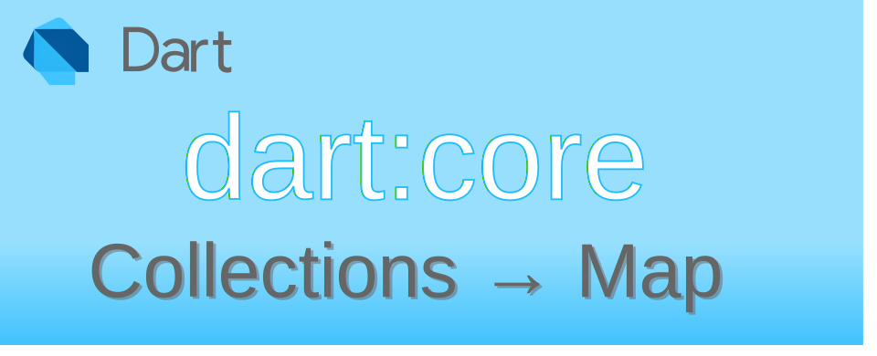

Dart: Collections→Map เบื้องต้น

Map (Map class) เป็นข้อมูลที่เก็บในรูปแบบ key-value pair การเข้าถึงข้อมูลจะใช้วิธีการอ้าง key เพื่อให้เข้าถึงข้อมูลที่ต้องการได้อย่างรวดเร็ว ตัว key จะเป็นการจัดเก็บข้อมูลแบบไม่ซ้ำ และเป็นรูปแบบข้อมูลที่ใช้ในฐานข้อมูลประเภท non-relational database
การสร้าง Map
ข้อมูล Map จะถูกประกาศในเครื่องหมายวงเล็บปีกกา {...} โดยสามารถกำหนดประเภทข้อมูลที่บรรจุอยู่ใน Map ผ่าน Generics
void main() {
var emptyMap1 = {};
Map<dynamic, dynamic> emptyMap2 = {}; //same as emptyMap1
var weekend = <String, String>{'sat': 'Saturday', 'sun': 'Sunday'};
print(weekend['sat']); // output → Saturday
print(weekend['sun']); // output → Sunday
print(weekend['mon']); // output → null
var oneTwo = <int, String>{1: 'One', 2: 'Two'};
print(oneTwo[1]); // output → One
print(oneTwo[2]); // output → Two
print(oneTwo[3]); // output → null
print(oneTwo['x']); // output → null
}
การสร้าง Map จาก elements อื่นที่มีอยู่แล้ว
หากต้องการสร้าง Map จาก Map elements อื่น ๆ สามารถใช้ .from() และ .of() constructors ในการสร้างได้โดยมีรายละเอียดการใช้งานดังนี้
.from()ตัว elements ที่จะนำมาใช้ หากมี Generics ที่ไม่ตรงกับที่ประกาศ จะพยายามแปลงให้อัตโนมัติ (casting).of()ตัว elements ที่จะนำมาใช้ ต้องมี Generics ที่ตรงกับที่ประกาศเท่านั้น หากไม่ตรงจะ compile ไม่ผ่าน
ตัวอย่างการใช้ .from() หากตัว elements ที่นำมาสร้างมี Generics ประเภทไม่ตรงกัน ก็จะพยายาม cast ให้อัตโนมัติ แต่ถ้าไม่สามารถ cast ได้ จะขึ้น exception error เมื่อ run โปรแกรม
void main() {
var planets = <num, String>{1: 'Mercury', 2: 'Venus', 3: 'Earth', 4: 'Mars'};
var mapFromNum = Map<int, String>.from(planets); // OK automatic cast key from num → int
print(mapFromNum); // {1: Mercury, 2: Venus, 3: Earth, 4: Mars}
var mapFromString =
Map<String, String>.from(planets); // error → type 'int' is not a subtype of type 'String' in type cast
print(mapFromString);
}
สำหรับ .of() นั้น ต้องมี Generics แบบเดียวกันเท่านั้นถึงจะยอมให้สร้างจาก elements ดังกล่าว
void main() {
var planets = <num, String>{1: 'Mercury', 2: 'Venus', 3: 'Earth', 4: 'Mars'};
var mapNew1 = Map<num, String>.of(planets); // OK
print(mapNew1); // → {1: Mercury, 2: Venus, 3: Earth, 4: Mars}
var mapNew2 = Map<int, String>.of(planets); // error → The argument type 'Map<num, String>' can't be assigned to the parameter type 'Map<int, String>'.
print(mapNew2);
}
การสร้าง Map แบบแก้ไขไม่ได้ (Unmodifiable Map)
Map ที่แก้ไขไม่ได้คือ Map ที่สร้างแล้ว ไม่สามารถเพิ่ม/ลด/แก้ไข สมาชิกใน Map ได้ มีวิธีการสร้าง 2 วิธีคือ ใช้ keyword const หรือใช้ .unmodifiable() constructor
ตัวอย่างการใช้ const
void main() {
var test0 = const {1: 'Mercury', 2: 'Venus', 3: 'Earth'};
var test1 = const <int, String>{1: 'Mercury', 2: 'Venus', 3: 'Earth'}; // same as test0
const test2 = <int, String>{1: 'Mercury', 2: 'Venus', 3: 'Earth'}; // same as test0
const Map<int, String> test3 = {1: 'Mercury', 2: 'Venus', 3: 'Earth'}; // same as test0
Map<int, String> test4 = const {1: 'Mercury', 2: 'Venus', 3: 'Earth'}; // same as test0
test0.addAll({4: 'Mars'}); // error → Unsupported operation: Cannot modify unmodifiable map
test0.remove(1); // error → Unsupported operation: Cannot modify unmodifiable map
}
ตัวอย่างการใช้ .unmodifiable() constructor
void main() {
var test0 = Map<int, String>.unmodifiable({1: 'Mercury', 2: 'Venus', 3: 'Earth'});
Map<int, String> test1 = Map.unmodifiable({1: 'Mercury', 2: 'Venus', 3: 'Earth'}); // same as test0
test0.addAll({4: 'Mars'}); // error → Unsupported operation: Cannot modify unmodifiable map
test1.remove(1); // error → Unsupported operation: Cannot modify unmodifiable map
}
การเข้าถึงสมาชิกใน Map
เนื่องจาก Map เป็นโครงสร้างข้อมูลที่เป็น key-value pair ผู้ใช้สามารถเข้าถึงส่วนของข้อมูลได้ 3 อย่างคือ
- ข้อมูล value ที่ตรงกับ key ที่ระบุ
- ข้อมูล key elements
- ข้อมูล value elements
ระบุ key เพื่อให้ได้ value
รูปแบบนี้เป็นจุดประสงค์หลักในการใช้ Map นั้นคือ ใช้ key ในการเข้าถึง value ที่ตรงกัน สามารถเขียนโดยใช้เครื่องหมายวงเล็บก้ามปู [key] เพื่อให้ได้ value กลับมา
หาก key ที่ระบุ ไม่มีอยู่ใน Map ที่ระบุ จะคืนค่า null กลับมา
void main() {
var planets = {1: 'Mercury', 2: 'Venus', 3: 'Earth'};
print(planets[0]); // output → null
print(planets[1]); // output → Mercury
print(planets[2]); // output → Venus
var weekends = {'sat': 'Saturday', 'sun': 'Sunday'};
print(weekends['sun']); // output → Sunday
print(weekends['sat']); // output → Saturday
print(weekends['mon']); // output → null
}
การเข้าถึง key elements
ใช้สำหรับดึงข้อมูล key ใน Maps ทั้งหมดออกมาว่ามี key อะไรอยู่บ้าง ใช้คำสั่ง .keys เพื่อคืนค่า Iterable keys กลับมา แล้วใช้คำสั่งใน Iterable class เพื่อไล่อ่านข้อมูลตามความต้องการ
void main() {
Map<int, String> planets = {1: 'Mercury', 2: 'Venus', 3: 'Earth'};
Iterable<int> keys = planets.keys;
print(keys); // output → (1, 2, 3)
for (int index = 0; index < keys.length; ++index) {
print('keys at index [$index] is ${keys.elementAt(index)}');
}
for (var key in keys) {
print('planets[$key] = ${planets[key]}');
}
}
ผลที่ได้
(1, 2, 3)
keys at index [0] is 1
keys at index [1] is 2
keys at index [2] is 3
planets[1] = Mercury
planets[2] = Venus
planets[3] = Earth
การเข้าถึง value elements
ใช้สำหรับดึงข้อมูล value ใน Maps ทั้งหมดออกมาว่ามี value อะไรอยู่บ้าง ใช้คำสั่ง .values เพื่อคืนค่า Iterable values กลับมา แล้วใช้คำสั่งใน Iterable class เพื่อไล่อ่านข้อมูลตามความต้องการ
void main() {
Map<int, String> planets = {1: 'Mercury', 2: 'Venus', 3: 'Earth'};
Iterable<String> values = planets.values;
print(values); // output → (Mercury, Venus, Earth)
for (int index = 0; index < values.length; ++index) {
print('values at index [$index] is ${values.elementAt(index)}');
}
for (var value in values) {
print('$value is in planets');
}
}
ผลที่ได้
(Mercury, Venus, Earth)
values at index [0] is Mercury
values at index [1] is Venus
values at index [2] is Earth
Mercury is in planets
Venus is in planets
Earth is in planets
การทดสอบว่า Map มี key หรือ value ที่สนใจหรือไม่
การทดสอบสามารถทำได้โดยใช้คำสั่ง .containsKey() และ .containsValue() เพื่อทดสอบว่ามีค่าที่สนใจหรือไม่ ถ้ามีจะคืนค่ากลับมาเป็น true
void main() {
Map<int, String> planets = {1: 'Mercury', 2: 'Venus', 3: 'Earth'};
print(planets.containsKey(0)); // output → false
print(planets.containsKey(1)); // output → true
print(planets.containsValue('Mars')); // output → false
print(planets.containsValue('Earth')); // output → true
}
จากตัวอย่างข้างบน หากต้องการทดสอบผ่าน Iterable ของ keys กับ values ก็สามารถทำได้เช่นเดียวกัน ผ่านคำสั่ง .contains()
void main() {
Map<int, String> planets = {1: 'Mercury', 2: 'Venus', 3: 'Earth'};
print(planets.keys.contains(0)); // output → false
print(planets.keys.contains(1)); // output → true
print(planets.values.contains('Mars')); // output → false
print(planets.values.contains('Earth')); // output → true
}
การ เพิ่ม/ลบ/แก้ไข สมาชิกใน Map
การเพิ่มสมาชิก
สามารถเพิ่มสมาชิกได้ 2 แบบ แบบเพิ่มทีละตัว เพิ่มโดยเอาสมาชิกใน Map อื่นมาใส่
- เพิ่มทีละตัว โดยใช้ operator
[]=หากมี key เดิมอยู่จะเป็นการทับข้อมูลเดิม - เพิ่มทีละตัวโดยใช้คำสั่ง
.putIfAbsent()จะคืนค่าเป็น value ของสมาชิกใหม่ที่เพิ่มเข้าไป หาก key ที่จะเพิ่ม ซ้ำกับที่มีอยู่ จะคืนค่าเป็น value ของที่มีอยู่ - เพิ่มโดยเอา Map อื่นมาใช้ ผ่านคำสั่ง
.addAll()หากมี key เดิมอยู่จะเป็นการทับข้อมูลเดิม
void main() {
Map<String, String> webColor = {'black': '#000000'};
webColor['blue'] = '#0000FF';
print(webColor); // → {black: #000000, blue: #0000FF}
var result1 = webColor.putIfAbsent('black', () => '#000'); // duplicate key [black] do nothing
print(result1); // → #000000
print(webColor); // → {black: #000000, blue: #0000FF}
var result2 = webColor.putIfAbsent('gray', () => '#808080'); // add key [gray] to Map
print(result2); // → #808080
print(webColor); // → {black: #000000, blue: #0000FF, gray: #808080}
webColor.addAll({'green': '#008000', 'yellow': '#FFFF00'});
print(webColor); // → {black: #000000, blue: #0000FF, gray: #808080, green: #008000, yellow: #FFFF00}
}

ข้อควรระวังในการเพิ่มสมาชิกใหม่คือ []= และ .addAll() หาก key ของข้อมูลที่เพิ่มเข้าไปใหม่ซ้ำกับข้อมูลใน Map จะทำให้ข้อมูลเดิมถูกทับ
หากต้องการเพิ่มโดยไม่ทับของเดิมที่มีอยู่ จำเป็นต้องเขียนทำสั่งตรวจสอบก่อนเพิ่มข้อมูลเสมอ
void main() {
Map<String, String> webColor = {'black': '#000000', 'white': '#FFFFFF'};
webColor['black'] = '#000'; // the operator []= do add or replace of match key
print(webColor); // → {black: #000, white: #FFFFFF}
// check key before add
if (!webColor.containsKey('white')) {
webColor['white'] = '#FFF';
}
print(webColor); // → {black: #000, white: #FFFFFF}
webColor['white'] ??= '#FFF'; // same as if() above by use null-aware operator
print(webColor); // → {black: #000, white: #FFFFFF}
// don't use `.addAll()` If you want to add only without overwriting the existing values that matches the key
var newColors = {'white': '#FFF', 'yellow': '#FFFF00'};
for (MapEntry item in newColors.entries) {
webColor.putIfAbsent(item.key, () => item.value); // add only missing key
}
print(webColor); // → {black: #000, white: #FFFFFF, yellow: #FFFF00}
}
การลบสมาชิก
- ลบสมาชิกทีละตัว ด้วยคำสั่ง
.remove()เพื่อลบข้อมูลที่ตรงกับ key - ลบสมาชิกทุกตัวที่ตรงกับ test ด้วยคำสั่ง
.removeWhere() - ลบสมาชิกทุกตัวทิ้ง ใช้คำสั่ง
.clear()จะมีผลทำให้ค่า.lengthเป็น 0
ในการลบสมาชิก หากทราบ key ของตัวที่จะลบ สามารถใช้คำสั่ง .remove() เพื่อลบข้อมูลที่ตรงกับ key ได้
void main() {
Map<String, String> webColor = {'black': '#000000', 'white': '#FFFFFF'};
var removedValue = webColor.remove('black'); // retrun value that remove
print(removedValue); // → #000000
print(webColor); // → {white: #FFFFFF}
var missValue = webColor.remove('blue'); // retrun null if miss
print(missValue); // → null
}
อย่าใช้ null ที่คืนค่ามาจาก .remove() เป็นตัวตรวจสอบว่าลบสำเร็จหรือไม่เพราะหากตัว Map ที่ทำงานด้วย สามารถเก็บข้อมูลที่เป็น null ได้ จะมีผลทำให้ผลการทำงานที่ตั้งใจผิดพลาด และเกิด bugs ได้
void main() {
var testNull = {1: null, 2: null};
var result1 = testNull.remove(1);
print(result1); // output → null
var result3 = testNull.remove(3);
print(result3); // output → null
}
การลบสมาชิกตัวใดก็ตามที่ตรงกับเงื่อนไข test ที่กำหนด ใช้คำสั่ง .removeWhere() หาก key หรือ value ไหนตรงกับตัว test ก็จะลบรายการดังกล่าว
void main() {
Map<String, String> cpuBrand = {
'Core-i3': 'intel',
'Core-i9': 'intel',
'Ryzen 9': 'AMD',
'Z80': 'Zilog',
};
cpuBrand.removeWhere((key, value) => key.startsWith('Ryzen'));
print(cpuBrand); // → {Core-i3: intel, Core-i9: intel, Z80: Zilog}
cpuBrand.removeWhere((key, value) => value == 'intel');
print(cpuBrand); // → {Z80: Zilog}
}
การลบสมาชิกทุกตัวใน Map จะใช้คำสั่ง .clear()
void main() {
Map<String, String> cpuBrand = {
'Core-i3': 'intel',
'Core-i9': 'intel',
'Ryzen 9': 'AMD',
'Z80': 'Zilog',
};
cpuBrand.clear();
print(cpuBrand.length); // → 0
print(cpuBrand); // → {}
}
การแก้ไขสมาชิก
การแก้ไขในที่นี่จะขอพูดถึงการแก้ไข value ตาม key ที่สนใจ
- ใช้ operator
[]=ในการแทนที่ value ตาม key ที่ระบุ - ใช้คำสั่ง
.update()เพื่อปรับปรุงข้อมูลสมาชิกทีละตัว - ใช้คำสั่ง
.updateAll()เพื่อปรับปรุงข้อมูลทุกตัว
เนื่องจาก []= สามารถใช้เป็นทั้งตัวเพิ่มสมาชิกใหม่ และปรับปรุงสมาชิกเก่าได้ด้วย หากต้องการจะ update ค่าที่มีอยู่แล้วเท่านั้น จำเป็นต้องใช้ตัวช่วย เช่น เช็คว่า key-value เป็น null หรือไม่ (ใช้ได้เฉพาะกรณีที่ Map มีการเก็บค่า value เป็น none-null เท่านั้น) หรือใช้ .containsKey() เพื่อตรวจสอบก่อนปรับปรุงข้อมูล
void main() {
Map<String, String> webColor = {'black': '#000000', 'white': '#FFFFFF'};
webColor['black'] = '#000'; // the operator []= do add or replace of match key
print(webColor); // → {black: #000, white: #FFFFFF}
}
คำสั่ง .update() จะทำการแก้ไขข้อมูลที่ตรงกับ key ที่ระบุ นอกจากนี้ยังสามารถเพิ่มเข้าได้หากไม่เจอ key ตัวคำสั่งนี้จะทำงานคล้ายกับ []= แต่แบ่งส่วนคำสั่ง ปรับปรุง หรือ เพิ่มค่าใหม่ ชัดเจนกว่า
void main() {
Map<String, String> country = {'TH': 'Thailand', 'JP': 'Japan'};
country.update('TH', (value) => value.toUpperCase());
print(country);// → {TH: THAILAND, JP: Japan}
country.update('US', (value) => value.toUpperCase(), ifAbsent: () => 'New');
print(country);// → {TH: THAILAND, JP: Japan, US: New}
}
คำสั่ง .updateAll() เหมาะกับการปรับปรุงข้อมูล value ทุกตัว ผ่านฟังก์ชั่นที่ต้องการ
void main() {
Map<String, String> cpuBrand = {
'Core-i3': 'intel',
'Core-i9': 'intel',
'Ryzen 9': 'AMD',
'Z80': 'Zilog',
};
cpuBrand.updateAll((key, value) => value.toUpperCase());
print(cpuBrand); // → {Core-i3: INTEL, Core-i9: INTEL, Ryzen 9: AMD, Z80: ZILOG}
cpuBrand.updateAll((key, value) => key.startsWith('Core') ? value.toLowerCase() : value);
print(cpuBrand); // → {Core-i3: intel, Core-i9: intel, Ryzen 9: AMD, Z80: ZILOG}
cpuBrand.updateAll((key, value) {
if (key != 'Z80') {
return '$value (x86-64)';
} else {
return value;
}
});
print(cpuBrand); // → {Core-i3: intel (x86-64), Core-i9: intel (x86-64), Ryzen 9: AMD (x86-64), Z80: ZILOG}
}
ข้อควรระวังขณะวนอ่านค่าใน Map
ขณะที่อ่านค่าจาก Map โดยใช้คำสั่ง for-in อย่าทำการลบ หรือเพิ่มข้อมูลสมาชิกใน Map ทำได้แค่อ่านค่า หรือแก้ไข value เท่านั้น
void main() {
Map<String, String> cpuBrand = {'Core-i3': 'intel', 'Core-i9': 'intel', 'Ryzen 9': 'AMD', 'Z80': 'Zilog'};
for (MapEntry item in cpuBrand.entries) {
if (item.key == 'Z80') {
cpuBrand[item.key] = item.value.toString().toUpperCase(); // modify only the value is OK
}
// try to remove elements
if (item.value == 'intel') {
cpuBrand.remove(item.key); // error → Concurrent modification during iteration: _Map
}
// try to add new elements
cpuBrand[item.key + '2024'] = item.value + ' new 2024'; // error → Concurrent modification during iteration: _Map
}
}
การสร้าง Map ใหม่ จากผลการ transform ข้อมูล Map ตัวเดิม
คำสั่ง .map() ช่วยอำนวยความสะดวกในการแปลงข้อมูลใน Map ที่มีแล้วนำผลจากการแปลงไปสร้างเป็น Map ใหม่
void main() {
Map<String, String> cpuBrand0 = {'Core-i3': 'intel', 'Core-i9': 'intel', 'Ryzen 9': 'AMD'};
var cpuBrand1 = cpuBrand0.map((key, value) => MapEntry(key, value)); // same as Map.of(cpuBrand0)
print(cpuBrand1); // → {Core-i3: intel, Core-i9: intel, Ryzen 9: AMD}
var cpuBrand2 = cpuBrand0.map((key, value) => MapEntry(key.toUpperCase(), value));
print(cpuBrand2); // → {CORE-I3: intel, CORE-I9: intel, RYZEN 9: AMD}
Map<String, String?> cpuBrand3 = cpuBrand0.map((key, _) => MapEntry(key, null));
print(cpuBrand3); // → {Core-i3: null, Core-i9: null, Ryzen 9: null}
}